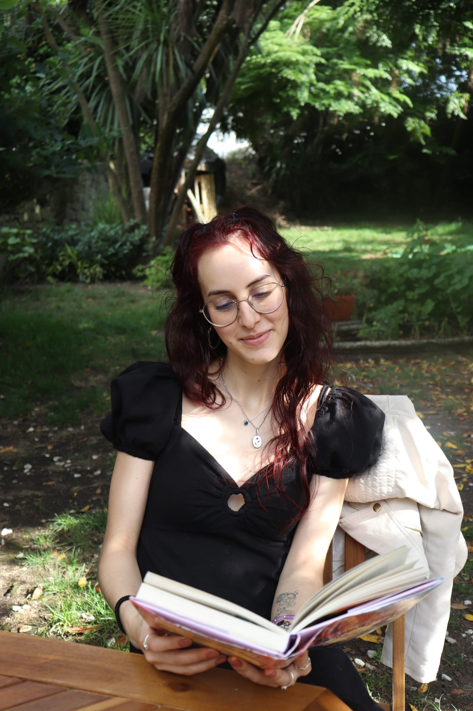
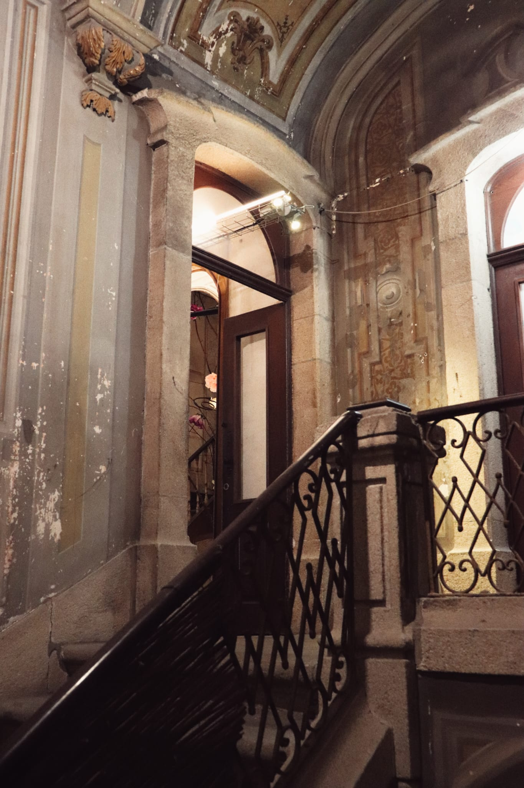
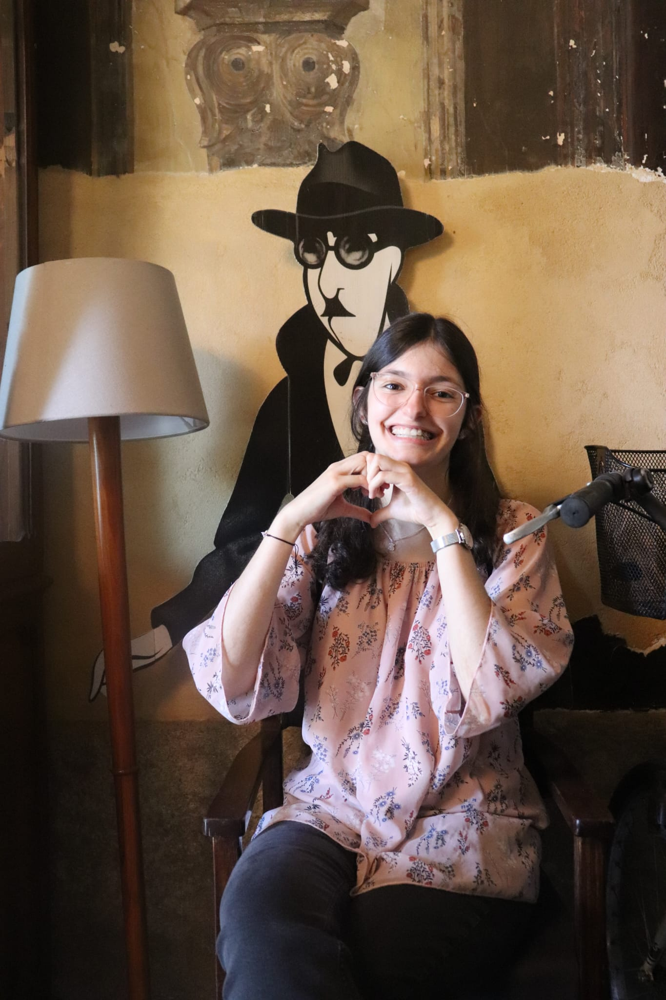
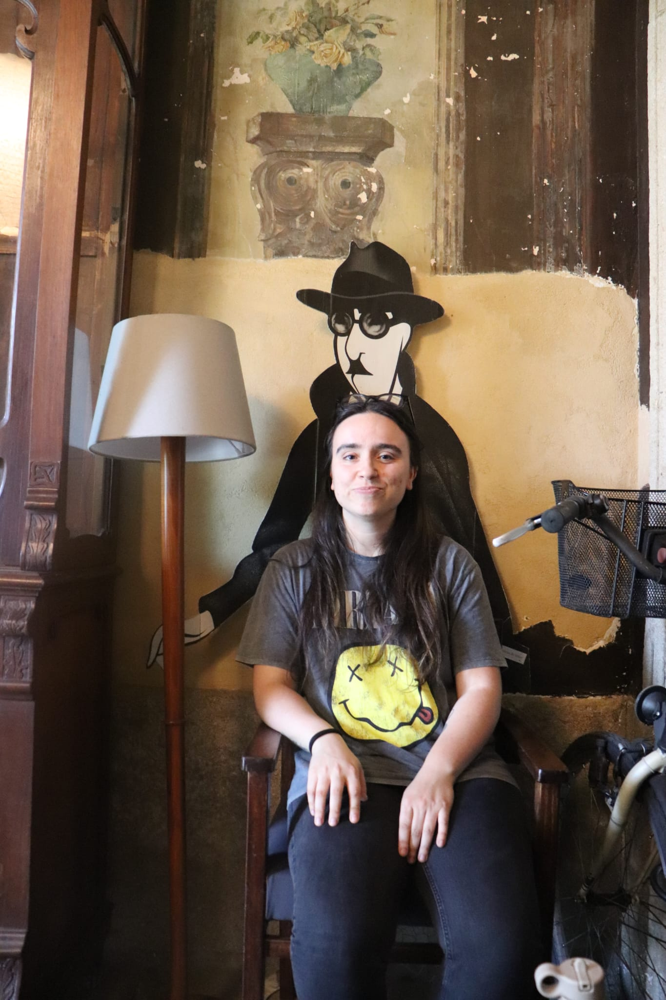
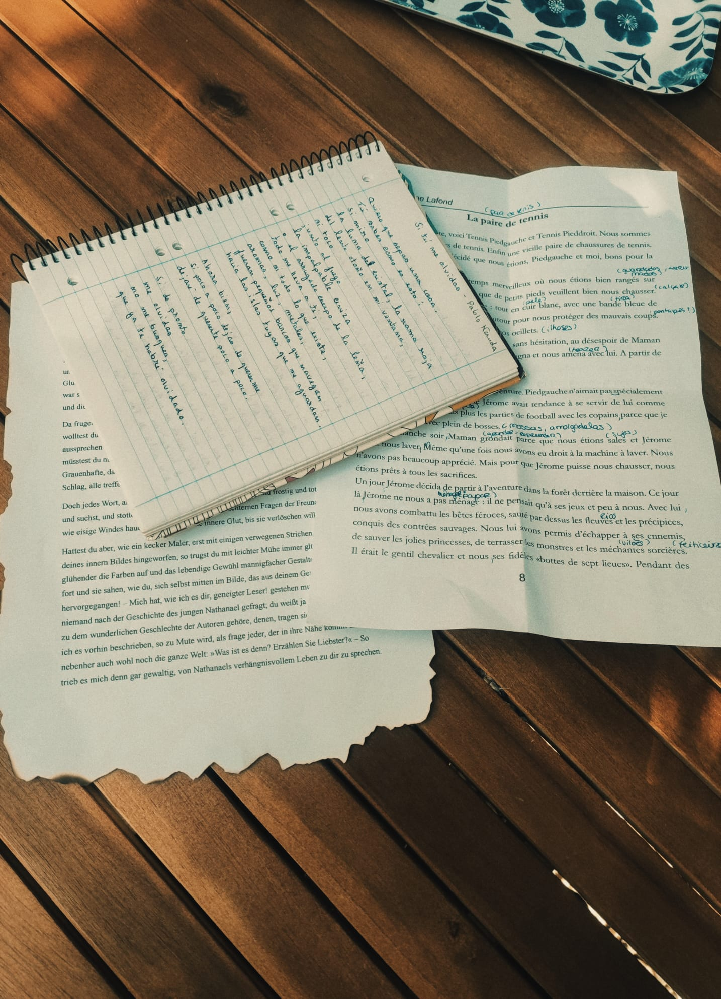
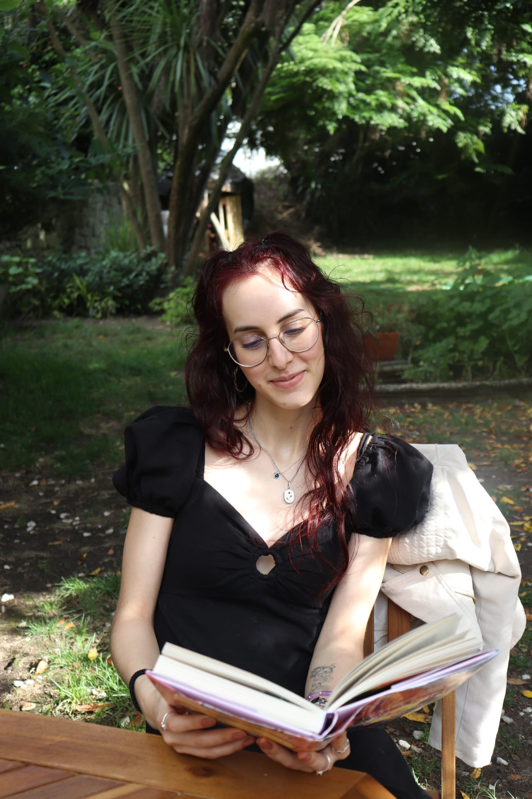
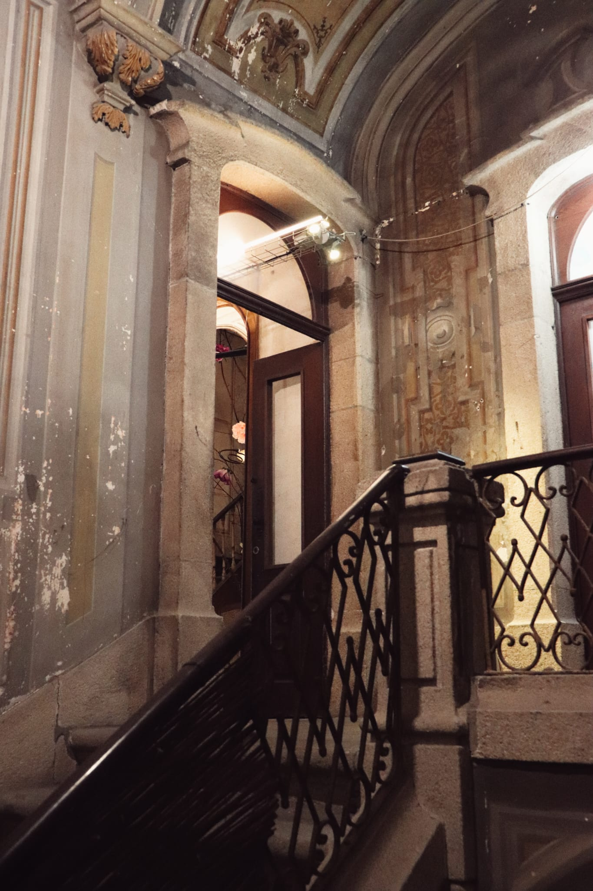
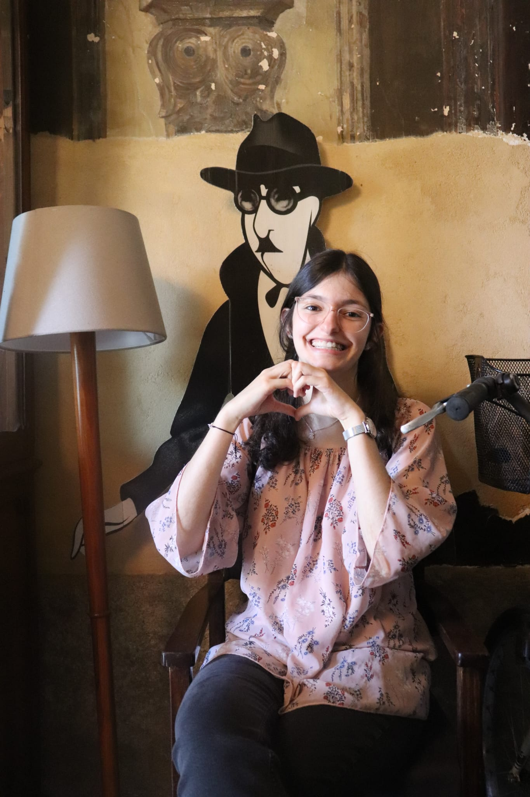
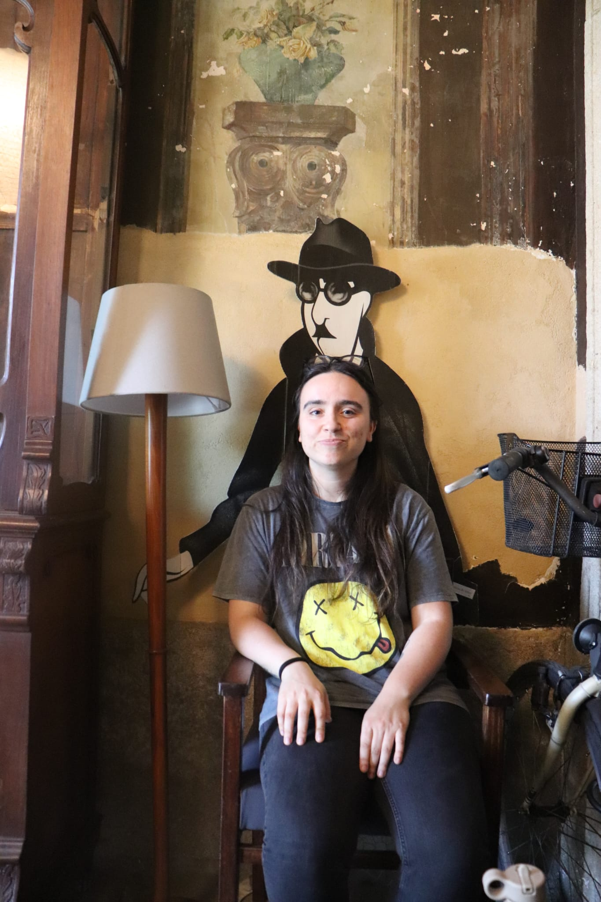
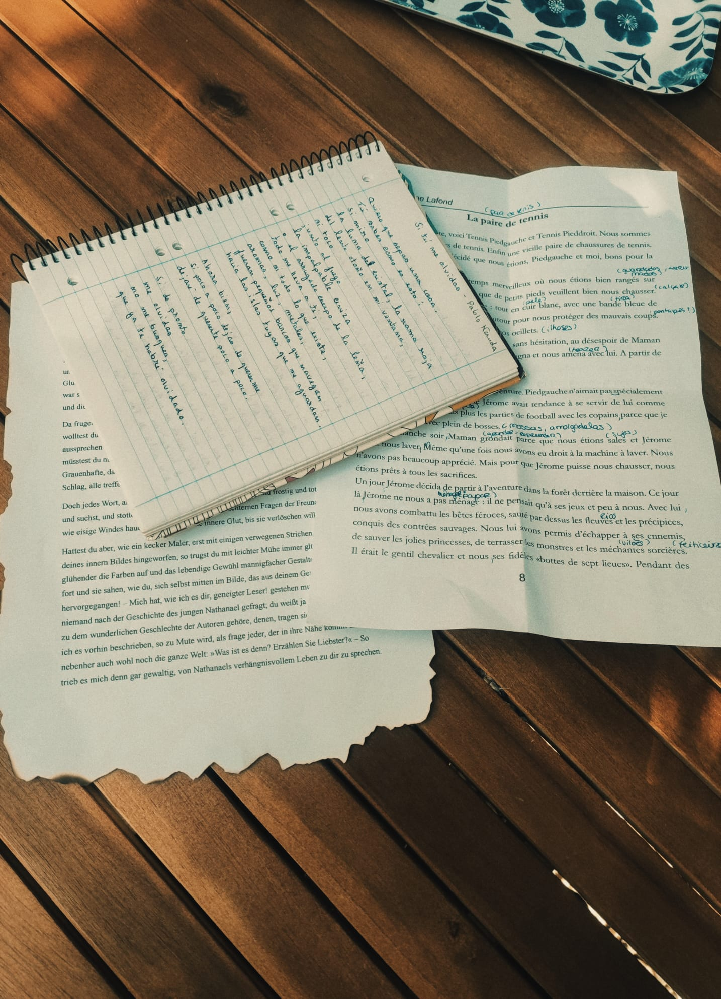

Livraria Centésima Página
Na escadaria que liga a Centésima Página à Casa Rolão, três estudantes do Mestrado em Tradução e Comunicação Multilingue apresentaram três contos em três línguas diferentes: alemão, espanhol e francês.
Embora as crianças não tenham participado diretamente na apresentação, elas foram o foco principal do evento, pois a intenção era despertar nelas o interesse e a curiosidade por outras línguas além do inglês.
Ao assistir às apresentações das estudantes, os espectadores imaginavam o quão empolgante seria para as crianças embarcar nessas aventuras linguísticas.
Os contos transportariam as crianças para terras distantes e culturas desconhecidas, onde elas poderiam aprender sobre tradições, valores e visões de mundo diferentes.
Essa experiência imaginativa e imersiva seria capaz de despertar neles o desejo de explorar outras línguas e culturas, abrindo caminho para um futuro multilíngue.
As apresentações dos estudantes foram uma forma de mostrar às crianças, e a todos os presentes, a importância de valorizar a diversidade linguística e encorajar o aprendizado de idiomas desde cedo.
Ao término do evento, os participantes inspiraram-se ao imaginar um futuro em que as crianças de hoje, motivadas por essa experiência, se tornassem fluentes em várias línguas e abraçassem a riqueza cultural que o multilinguismo oferece.
As crianças de hoje, ao aprenderem além do inglês, estarão preparadas para se conectar com pessoas de diferentes origens e desfrutar de uma perspectiva global mais ampla.
 








